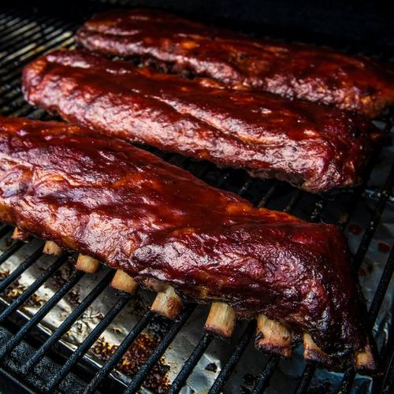

Ribs

Description
This easy to follow recipe will have you mastering around the block famous fall off the bone ribs before you know it
Ingredients
- Pork side, or back ribs
- Favourite rub or spice blend (can't ever go wrong with SPG)
- Spritz bottle with apple juice or ACV
- Yellow mustard
Steps
- Preheat smoker to 225F
- Remove the silverskin off the underside of the ribs with a dull ended butter knife, this takes off that awful weird underskin that gets weird when cooking. You'll thank me later
- Spread mustard over both sides of the ribs, this will act as a binding agent for the rub to stick on to and create that to kill for bark
- Cover the ribs on both sides with a generous amount of rub
- Place ribs directly on the grill grates for 3 hours
- Spritz with the apple juice/ACV mixture every hour
- Wrap ribs in aluminum foil, be sure so pour a little of the spritz mix into each foil pack of ribs and cook for another two hours
- Remove ribs from foil and place on direct heat and cover in your favourite sauce and allow to set for 20-30 minutes
- Pull ribs from smoker and enjoy that fall off the bone goodness